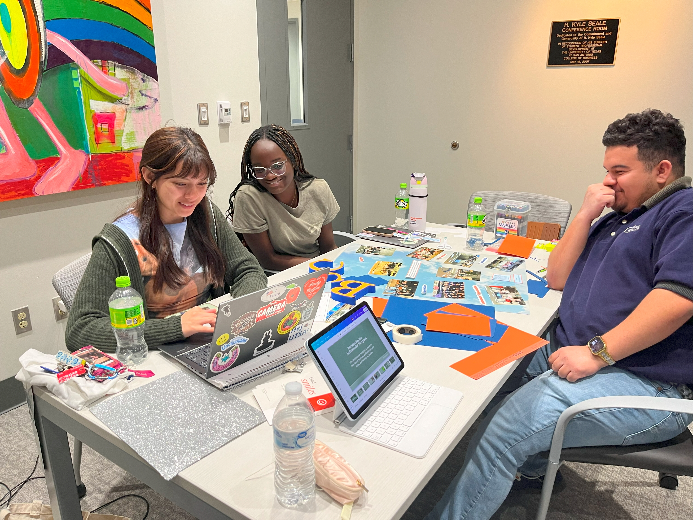
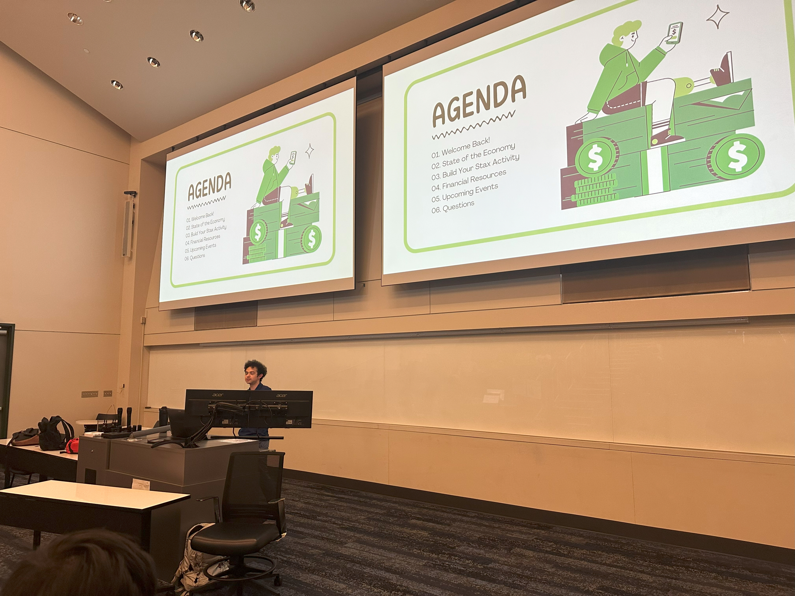
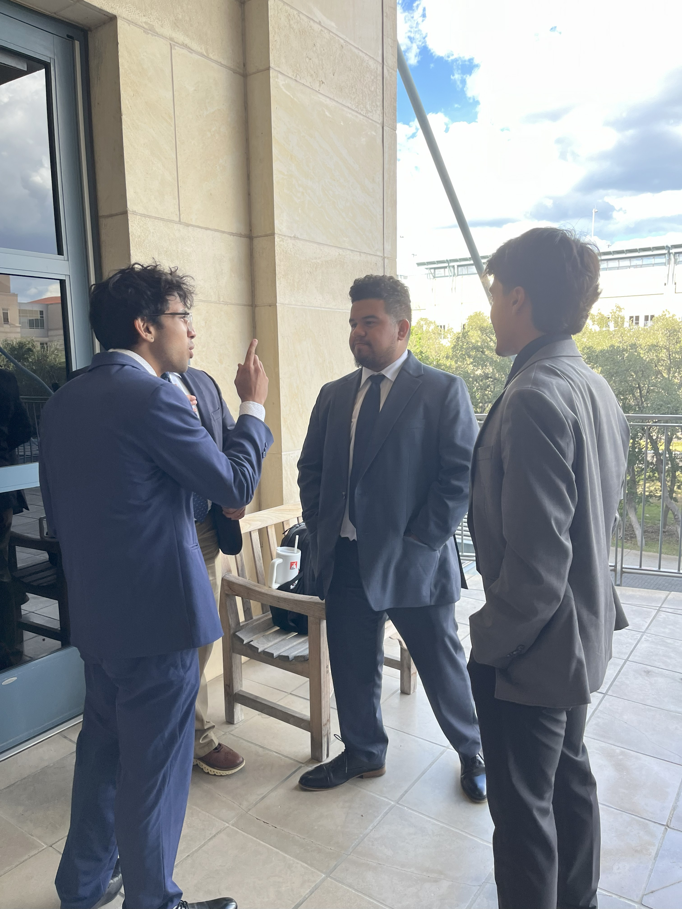

BSC has three committees—marketing, finance, and operations—each playing a vital role in the organization. The marketing committee focuses on promoting BSC through social media, event advertising, and branding efforts. The finance committee manages budgets, dues, and fundraising to support the organization’s activities. Meanwhile, the operations committee ensures events and meetings run smoothly by handling logistics and planning.

The BSC marketing committee manages the organization’s social media, presentations, and advertising efforts. It ensures BSC is effectively promoted through engaging content and outreach strategies. By overseeing all marketing initiatives, the committee helps increase visibility and attract new members.
The BSC finance committee oversees budgeting, profit shares, and fundraisers to ensure the organization’s financial stability. It manages funds responsibly, allocating resources for events, travel, and other initiatives. Through careful financial planning, the committee helps sustain and grow BSC’s opportunities for members.


The BSC operations committee is responsible for organizing events, fundraisers, and meetings to keep the organization running smoothly. It reaches out to speakers and businesses, ensuring members have access to valuable networking and learning opportunities. By planning and coordinating the schedule, the committee helps create a structured and engaging experience for all members.